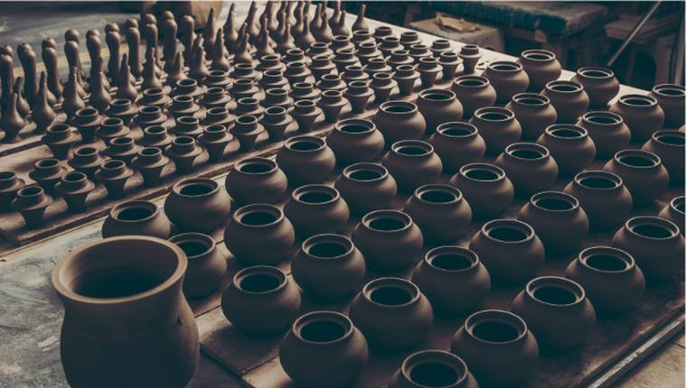
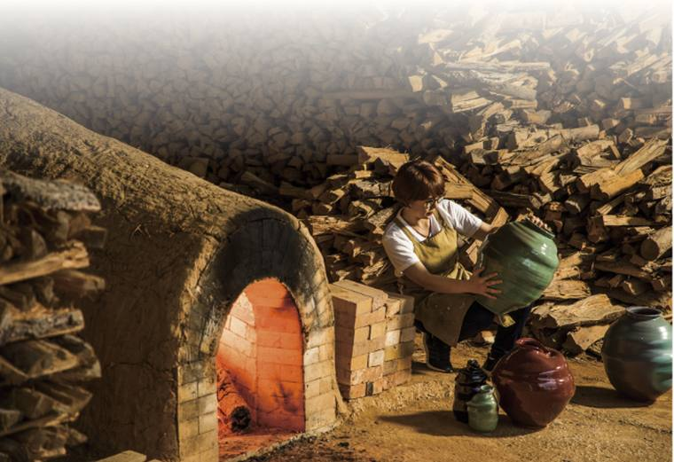
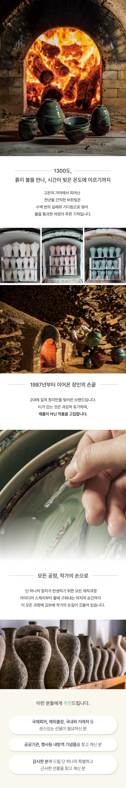

하나의 청자가 태어나기까지 — 모든 공정에 김보배 작가의 손길이 깃듭니다
강진 청자토를 3년 이상 재우고 고릅니다
전통 물레로 형태를 올립니다
문양을 새깁니다
백토·자토를 메워 넣는 고려의 기법
천천히, 고르게 말립니다
한 번 구워 몸을 단단히
자연재료 무균열 청자유약을 입힙니다
불이 비색을 완성합니다
티가 있는 것은 과감히 내려놓습니다
작가가 직접 선별하고 포장합니다


